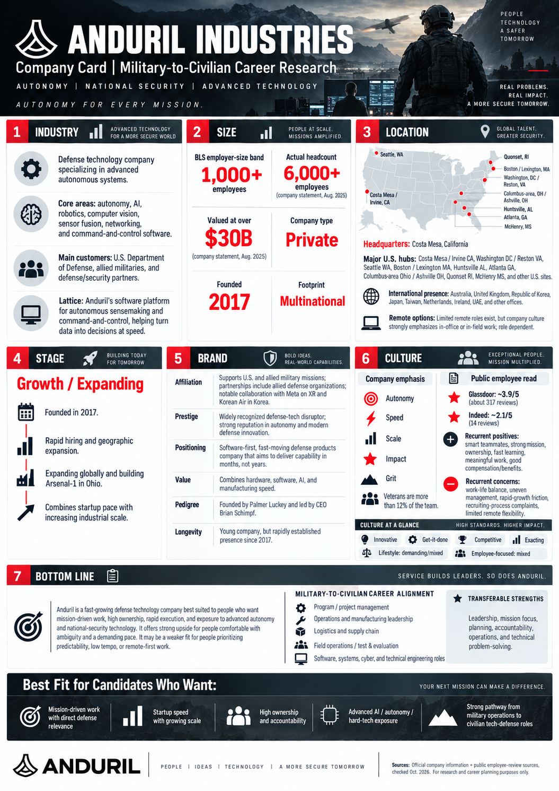

01 — COPY
Copy the complete research prompt
Select Copy Research Prompt. It includes all six research areas, the seventh Bottom Line & Best Fit conclusion, and a detailed cinematic visual design blueprint.
A free AI research toolkit for U.S. service members preparing to transition into the civilian workforce. Learn what a company does, how it operates, and where your experience could fit.
The copied prompt includes the complete cinematic Company Research Card visual instructions. No downloads or image attachments are needed. The website is free; ChatGPT account and usage limits apply.
The full research rules and the approved cinematic infographic design are built into the prompt. No example image upload or download is required.
Select Copy Research Prompt. It includes all six research areas, the seventh Bottom Line & Best Fit conclusion, and a detailed cinematic visual design blueprint.
Start a new ChatGPT conversation. Paste and submit the copied instructions. No attachments or extra setup are required.
When asked, enter the company name. ChatGPT should produce cited research and a cinematic infographic with verified branding where possible. Review it and download the image when available. Usage limits may apply.
This Anduril example illustrates the cinematic one-page design, six separately researched company areas, and the seventh Bottom Line & Best Fit conclusion. Select the image to open it at full size and zoom in.

Verification notice: This is AI-generated reference art, not an official Anduril document or verified company photography. Verify facts and visual labels independently.
Design reference: the visual layout is described directly in the prompt. This on-page example is illustrative artwork, not factual evidence; no download or attachment is required.
Every company is researched through six separate areas. This approach works across industries, including technology, finance, healthcare, energy, manufacturing, defense, and professional services.
What the business does: markets, products, services, customers, ownership, and industry conditions.
Verified headcount, BLS employer-size band, business-unit scale, revenue when disclosed, and geographic footprint.
Headquarters, U.S. employment cities, international operations, and verified remote or hybrid options.
Launch/Startup, Growth/Expanding, Shakeout/Stable, Mature, or Declining—supported by evidence.
Affiliation, prestige, positioning, value, pedigree, and longevity, based on verifiable information.
Independent employee feedback compared with company claims: strengths, concerns, and evidence-based culture descriptors.
Summarizes employer strengths and tradeoffs, identifies three to five relevant civilian career families, and highlights four to six evidence-based Best Fit for Candidates Who Want attributes.
AI outputs can contain mistakes. Verify cited sources, current employee data, and all infographic text before sharing. This resource evaluates companies—not specific jobs, salaries, or benefits. ChatGPT Free has feature and usage limits.